Всё о GTA 6: игра и её реальная Флорида
Blip Guides — справочник по GTA 6: персонажи, регионы и всё об игре, а после релиза — миссии, транспорт, оружие и карта. И отдельный раздел — что Rockstar взяла из реальности.
До выхода GTA 6 — – дн. · 19 ноября 2026
Персонажи, транспорт, занятия, механики, бренды, животные и регионы. С 19 ноября — миссии, прохождение, оружие, пасхалки и карта Леониды.
- 8 персонажей
- 80 карточек: транспорт, занятия, механики, бренды, животные
- 6 регионов
- 11 статей об игре
- игра «Кто или где это?»
Кадр из игры рядом с реальным фото: что Rockstar скопировала из Флориды, что переделала, высмеяла или придумала сама.
- 36 сравнений
- 4 вердикта
- 6 разделов
- игра «Скопировали или придумали?»
Новое на сайте
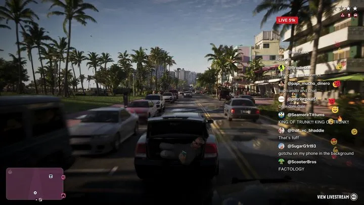
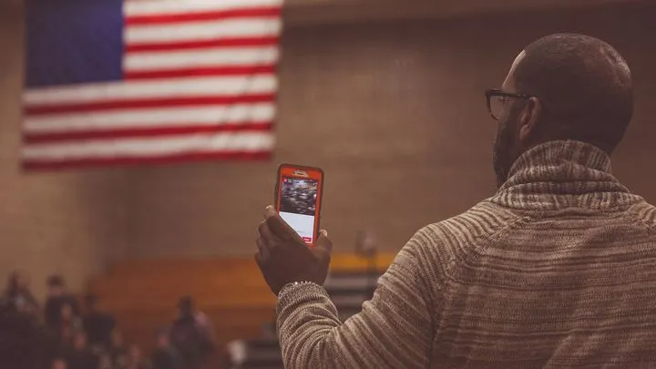
vs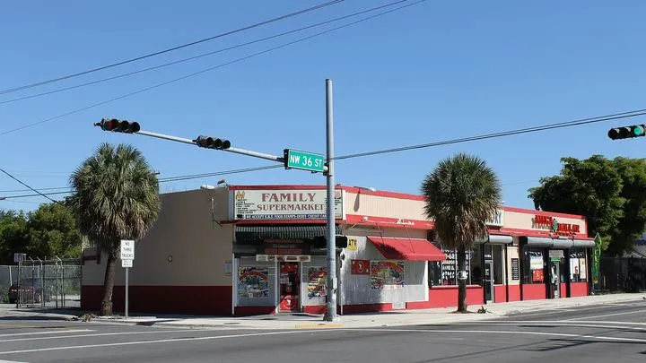
vs
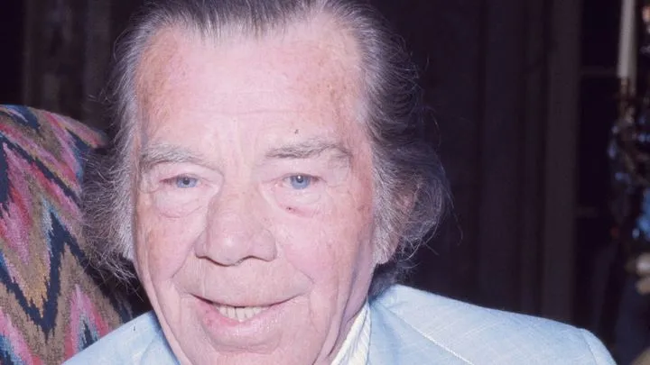
vs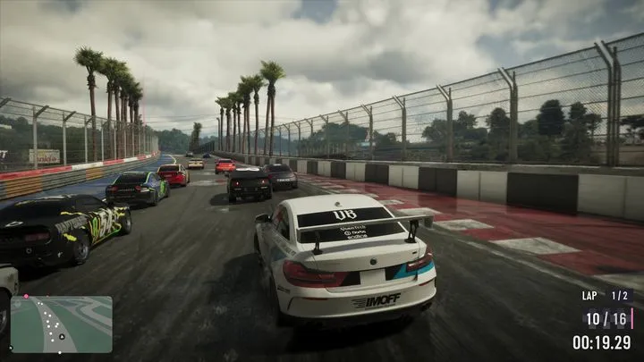
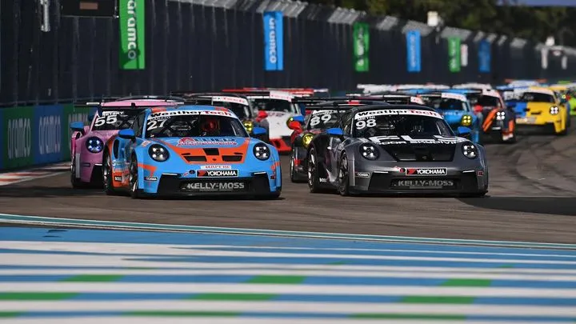
vs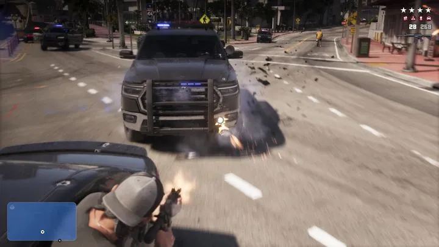
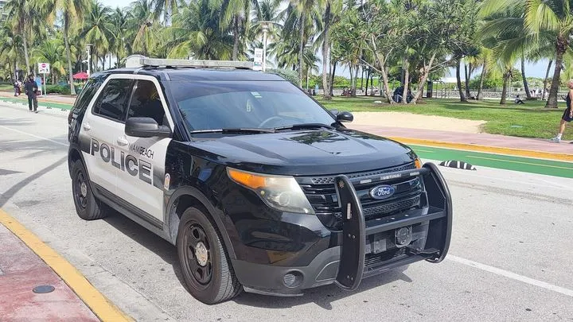
vs
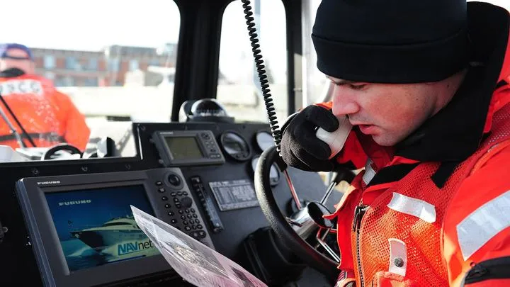
vs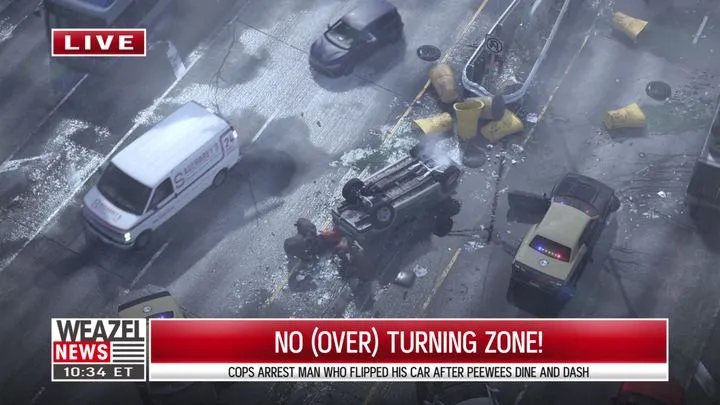
vs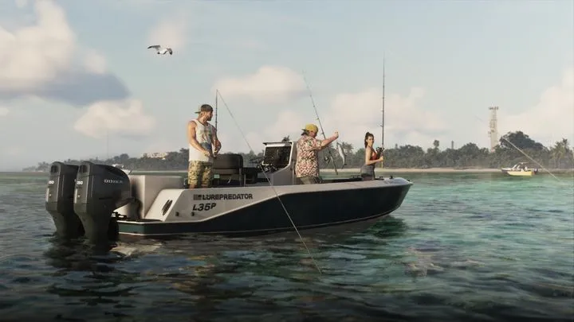
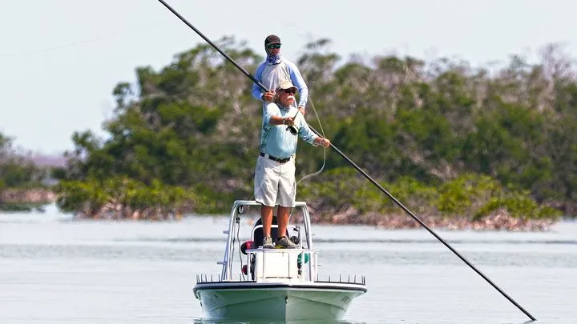
vsСкоро в справочнике
Интерактивная карта с режимами: сравнения с реальностью, миссии, коллекционки, пасхалки. Переключай слой — меняются метки.
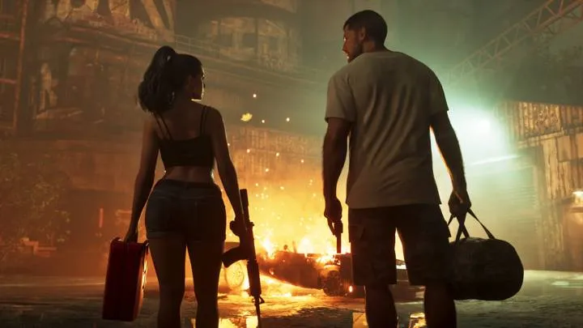
Все сюжетные миссии по порядку: как пройти, что открывается, где герои и места из сравнений.
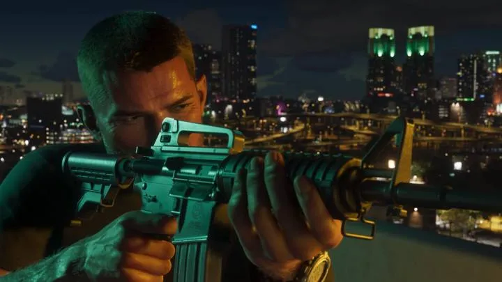
Каталог оружия, редкие предметы и пасхалки — с местами на карте.
Каждый день — одно сравнение: кадр игры рядом с реальным фото. Подписывайтесь:
YouTubeInstagramTikTokО проекте
Blip Guides — неофициальный справочник по GTA 6 на русском. Blip — так в играх серии называют метки на карте: мы ставим метку на всё, что есть в игре, — от персонажей и миссий до реальных мест Флориды, с которых Rockstar их срисовала.
Подробнее о проекте